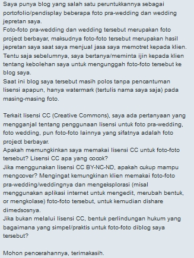

Tanya Jawab Sobat CCID 13 Agustus 2016

Pada twitter Creative Commons Indonesia, @DinaDinotz mengajukan pertanyaan tentang hak cipta dan lisensi Creative Commons:
- Apakah Lisensi CC dapat digunakan untuk proyek foto berbayar saya? Kira-kira lisensi apa yang paling cocok untuk foto-foto tersebut?
- Apakah lisensi CC BY-NC-ND kompatibel untuk digunakan pada proyek tersebut? Dengan kemungkinan pelanggan-pelanggan saya akan menyunting, dan mengubah bentuk foto-foto tersebut.
- Bagaimana hukum hak cipta melindungi karya-karya foto saya?
Karya fotografi merupakan salah satu obyek yang dilindungi oleh Undang-Undang Hak Cipta di Indonesia. Dasar hukum hal tersebut adalah Pasal 40 Undang-Undang No. 28 Tahun 2014 Tentang Hak Cipta (UUHC 2014). Artinya segala ketentuan terkait perlindungan, dan penggunaan karya fotografi Anda mengacu pada UUHC 2014. Lisensi Creative Commons (CC) merupakan bentuk lisensi yang diakui oleh rezim Hak Cipta di Indonesia. Segala ketentuan yang ada pada lisensi CC telah sesuai dengan apa yang dimaksud dengan lisensi oleh UUHC.
Berikut ini adalah beberapa hal yang layak Anda perhatikan berkaitan dengan pertanyaan Anda:
- Izin Penggunaan
Apabila Anda tidak menggunakan lisensi terbuka pada karya-karya Anda, kita dapat berasumsi bahwa lisensi yang Anda gunakan adalah lisensi tertutup. Artinya, setiap penggunaan karya Anda oleh pengguna untuk kepentingan apapun harus mendapatkan izin langsung dari Anda. Sebagai informasi, lisensi tertutup menganut prinsip “All Rights Reserved” (Seluruh Hak Dipertahankan), sedangkan lisensi terbuka menganut prinsip “Some Rights Reserved” (Beberapa Hak Dipertahankan), yang memperbolehkan penggunaan tanpa izin langsung dari pencipta. Lisensi terbuka mengandung persetujuan langsung dari pencipta yang juga secara langsung menyerahkan izin penggunaan kepada pengguna ciptaan.
Karenanya, setiap penggunaan karya fotografi yang Anda buat, jika dilakukan tanpa seizin Anda, dapat dianggap sebagai pelanggaran hak cipta.
Hal-hal yang kami sebutkan di atas dapat menjadi bahan pertimbangan bagi Anda untuk memilih lisensi tertutup atau lisensi terbuka.
- Masa Berlaku Hak Cipta
Perlu diketahui bahwa masa berlaku perlindungan hak cipta atas karya fotografi dapat habis. Masa berlaku hak cipta karya fotografi dihitung sejak karya fotografi tersebut pertama kali dipublikasikan. Tidak ada perbedaan masa berlaku hak cipta dari UUHC 2002 dengan UUHC 2014. Menurut kedua peraturan tersebut karya fotografi habis masa berlakunya 50 tahun sejak pertama kali dipublikasikan. Masa berlaku mulai dihitung sebagai karya bebas hak cipta pada tanggal 1 Januari di tahun berikutnya, setelah tahun karya terserbut telah habis masa berlaku hak ciptanya.
- Penggunaan Wajar
Ketentuan penggunaan wajar terdapat pada pasal 43-51 UUHC 2014. Penggunaan wajar merupakan jenis-jenis penggunaan yang dapat dilakukan pengguna tanpa izin langsung dari pencipta. Misalnya penggunaan untuk kepentingan pendidikan, atau penggunaan bukan untuk kepentingan komersial, diperbolehkan tanpa ada persetujuan langsung dari pencipta, selama sumber ciptaan tersebut disebutkan. Penggunaan seperti yang Anda maksudkan dapat dianggap sebagai penggunaan wajar. Karena, pelanggan-pelanggan Anda telah membayarkan hak Anda untuk dapat memiliki dan menggunakan karya tersebut. Dengan catatan, penggunaan tersebut harus memenuhi syarat penggunaan wajar.
Penggunaan secara pribadi merupakan salah satu ketentuan penggunaan wajar. Jika pelanggan Anda mengutak-atik karya Anda, hal itu sebenarnya diperbolehkan, asal karya yang diutak-atik tersebut tidak diumumkan atau dikomunikasikan kepada publik. Bahkan penggunaan semacam ini juga tidak menuntut pengguna untuk menyebutkan nama Anda sebagai pencipta.
Misalnya, pelanggan Anda ingin membuat sebuah kompilasi beberapa foto yang nantinya akan dicetak dan digunakan untuk konsumsi pribadi. Atau, misalnya pelanggan Anda membuat suatu kompilasi foto tertentu, kemudian mengubah nama berkasnya untuk membuat urutan tertentu, yang kemudian hasil cetaknya akan diberikan kepada keluarga yang hadir dan ikut serta dalam sesi foto tersebut.
Beberapa hal dapat diperhatikan untuk menentukan suatu penggunaan di ranah media sosial sebagai penggunaan wajar atau bukan. Jika pemanfaatan foto tersebut bukan untuk kepentingan komersial, maka penggunaan tersebut dapat dianggap sebagai penggunaan wajar. Suatu penggunaan juga dapat dianggap sebagai pengunaan secara pribadi jika seorang pengunggah foto membatasi orang-orang tertentu saja yang dapat mengakses foto-foto yang diunggah di akun media sosialnya.
Meskipun begitu, kita tidak mungkin dapat mengontrol seluruh penggunaan foto dari pengguna yang dapat mengakses foto yang diunggah tersebut.
Salah satu cara untuk mencegah penyalahgunaan foto adalah dengan menyertakan ketentuan-ketentuan penggunaan yang ditujukan kepada seluruh pengguna foto Anda yang dibagikan. Sebaiknya dibuat suatu kontrak yang dapat menjelaskan tentang batas-batas penggunaan terhadap karya foto Anda. Hal itu dapat dimulai dengan mengikat pelanggan Anda pada ketentuan-ketentuan tersebut. Produk-produk lisensi yang disediakan oleh Creative Commons dapat membantu Anda untuk menyampaikan maksud Anda dengan bahasa yang sederhana.
- Lisensi Creative Commons
Anda dapat mencantumkan kode lisensi tersebut sebagai tanda air di karya foto Anda, atau dengan menuliskannya pada suatu kontrak lisensi untuk Anda dan Pelanggan Anda, atau jika Anda mengunggah foto tersebut di situs pribadi Anda, maka Anda bisa juga membuat bagan pemberitahuan di situs pribadi Anda yang menyatakan bahwa setiap foto yang Anda unggah di situs tersebut menerapkan ketentuan lisensi Creative Commons yang Anda pilih.
Terdapat tiga model lisensi dari Creative Commons yang layak Anda gunakan untuk proyek foto berbayar Anda. Pilihan lisensi mana yang mau Anda gunakan bergantung pada ketentuan seperti apa yang ingin Anda terapkan pada penggunaan terhadap karya foto ciptaan Anda.
- BY-NC

Lisensi CC Atribusi-NonKomersial
Anda diizinkan:
- Berbagi: Menyalin dan menyebarluaskan ciptaan.
- Adaptasi: Mengubah, menggubah, dan membuat ciptaan turunan dari suatu ciptaan.
Dengan catatan:
- Atribusi: mencatumkan nama yang sesuai, mencantumkan tautan terhadap lisensi, dan menunjukan perubahan yang dibuat.
- NonKomersial: Tidak dapat menggunakan ciptaan untuk kepentingan komersial.
- BY-NC-SA

Lisensi CC Atribusi-NonKomersial-BerbagiSerupa
Anda diizinkan:
- Berbagi: Menyalin dan menyebarluaskan ciptaan.
- Adaptasi: Mengubah, menggubah, dan membuat ciptaan turunan dari suatu ciptaan.
Dengan catatan:
- Atribusi: mencatumkan nama yang sesuai, mencantumkan tautan terhadap lisensi, dan menunjukan perubahan yang dibuat.
- NonKomersial: Tidak dapat menggunakan ciptaan untuk kepentingan komersial.
- BerbagiSerupa: Apabila Anda menggubah, mengubah, atau membuat ciptaan turunan dari suatu ciptaan, Anda harus menyebarluaskan kontribusi Anda di bawah lisensi yang sama dengan materi asli.
- BY-NC-ND

Anda diizinkan:
- Berbagi: Menyalin dan menyebarluaskan ciptaan.
- Adaptasi: Mengubah, menggubah, dan membuat ciptaan turunan dari suatu ciptaan.
Dengan catatan:
- NonKomersial: Tidak dapat menggunakan ciptaan untuk kepentingan komersial. TanpaTurunan: Ciptaan yang anda modifikasi tidak boleh disebarluaskan.
Dengan menerapkan ketentuan NonKomersial, Anda dapat mencegah orang lain untuk mendapatkan keuntungan komersial dari foto Anda. Artinya setiap keuntungan ekonomi yang didapatkan dari foto Anda, harus disalurkan dengan eksklusif kepada Anda saja, atau beberapa pihak yang harus Anda nyatakan juga dapat menerima keuntungan ekonomi tersebut.
Lalu, ketentuan TanpaTurunan dapat mencegah seseorang untuk mengutak-atik, atau paling tidak, mengumumkan hasil suntingan foto ciptaan Anda kepada publik. Artinya, orang-orang tersebut dapat saja menyebarkan hasil suntingan tersebut jika mendapatkan persetujuan dari Anda, sebagai pengecualian.
Selain itu, ketentuan Atribusi mewajibkan setiap aktivitas penggandaan, penyebarluasan, atau penggunaan kembali karya Anda untuk mencantumkan nama, sumber, dan lisensi yang Anda terapkan. Jika ketentuan pencantuman lisensi ini terus ditaati pada tiap berkas foto Anda yang disebarkan (jika Anda tidak menempelkan kode lisensi ini sebagai tanda air pada foto Anda), maka setiap calon pengguna akan dapat membaca ketentuan apa yang Anda terapkan bagi setiap calon pengguna ketika menggunakan foto ciptaan Anda.
Ketentuan-ketentuan pembatasan ini dapat diterapkan sambil tetap memberikan kebebasan kepada orang untuk membagikan karya Anda, baik materi asli maupun turunannya. Anda bisa mendapatkan manfaat publisitas sambil tetap melindungi beberapa hak Anda atas karya-karya ciptaan Anda. Selanjutnya, tinggal Anda memilih lisensi mana yang mau Anda terapkan, dan seluas apa model penggunaan yang Anda berikan kepada pengguna karya Anda.
Semoga membantu!
Pokoknya Creative Commons!